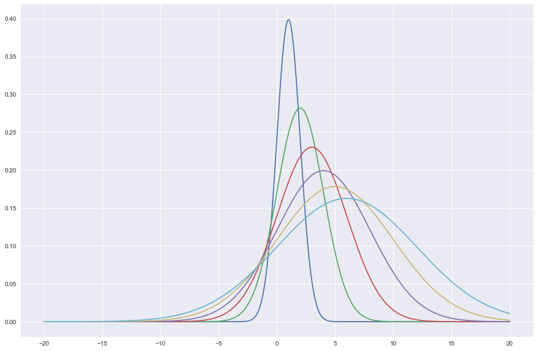

Numpy Tutorial: Sattistics
import numpy as np
A = np.random.rand(10,10) A
array([[ 0.14686345, 0.4890597 , 0.95867873, 0.70684257, 0.4571942 ,
0.88999371, 0.94088925, 0.39260288, 0.63593196, 0.91229658],
[ 0.48868386, 0.12750921, 0.53490442, 0.85215575, 0.68973691,
0.86751533, 0.10078796, 0.570043 , 0.57702153, 0.82067194],
[ 0.36724515, 0.44952882, 0.14455048, 0.92813935, 0.82722792,
0.15527858, 0.72646211, 0.78073294, 0.07039077, 0.02742469],
[ 0.93215519, 0.78939341, 0.05433345, 0.63077664, 0.12257019,
0.38620259, 0.50937441, 0.5286639 , 0.13651584, 0.08476626],
[ 0.02843688, 0.87159643, 0.58489852, 0.51735115, 0.5759214 ,
0.74431949, 0.55435673, 0.28474752, 0.77936953, 0.39612921],
[ 0.73733762, 0.90077575, 0.86999616, 0.69950308, 0.68703817,
0.5340441 , 0.42895176, 0.99739758, 0.05244868, 0.30736319],
[ 0.43320514, 0.29546614, 0.70165549, 0.07203503, 0.58150789,
0.64377815, 0.4401386 , 0.14734496, 0.43707321, 0.7376671 ],
[ 0.32679964, 0.39911744, 0.82063392, 0.42401808, 0.95892193,
0.72902086, 0.90609457, 0.66556375, 0.00359741, 0.51747374],
[ 0.8956028 , 0.32121392, 0.77467549, 0.53642615, 0.85494789,
0.56736366, 0.54043267, 0.26757794, 0.68840931, 0.47665347],
[ 0.13547503, 0.36567291, 0.28543209, 0.91452908, 0.57162599,
0.34107302, 0.14420041, 0.87902944, 0.68964655, 0.42688096]])
A.shape
(10, 10)
A.max()
0.9973975789240529
A.min()
0.0035974071135107533
A.mean()
0.53281080467131514
np.median(A)
0.53842941044090042
A.std()
0.30117722286159915
Mean and std of row
np.mean(A,axis =0)
array([ 0.39053118, 0.38187714, 0.45877901, 0.61380263, 0.64927112,
0.46921661, 0.60222378, 0.50624244, 0.27490776, 0.54313828])
np.std(A,axis =0)
array([ 0.32438441, 0.29543643, 0.35045695, 0.27228791, 0.2178827 ,
0.26696293, 0.32834441, 0.1804856 , 0.18123375, 0.31624931])
Mean and std of col
np.mean(A,axis =1)
array([ 0.24116424, 0.48699354, 0.4219599 , 0.43972281, 0.47657735,
0.57537948, 0.55289209, 0.66313705, 0.46013377, 0.57202973])
np.std(A,axis = 1)
array([ 0.19852809, 0.33144078, 0.28219183, 0.27736838, 0.22851456,
0.33649951, 0.31209182, 0.20212544, 0.27845001, 0.31922731])
Standard scalar : feature scaling
A_ss = A - A.min()/A.max()-A.min()
A_ss
array([[ 4.10527053e-01, 7.54472423e-01, 7.94834247e-01,
7.30222536e-01, 2.05492062e-01, 7.26892063e-01,
7.31928243e-01, 5.75438370e-01, 5.93092716e-01,
3.64078100e-01],
[ 6.91227074e-01, 3.26851066e-01, 6.93898234e-01,
5.00701344e-02, 7.09305332e-01, 8.38725771e-02,
7.42069173e-03, 7.35359172e-01, 2.95379821e-01,
6.85238478e-01],
[ 7.79833365e-01, 7.41786430e-01, 3.19212366e-01,
6.81133292e-01, 8.84713319e-01, 6.79371426e-01,
5.60580679e-01, 1.38029784e-01, 8.13389121e-02,
8.39869709e-01],
[ 4.95468619e-01, 8.24202013e-01, -5.68858232e-04,
4.31268827e-01, 3.38998416e-01, 9.81193130e-01,
4.35576371e-01, 6.44445825e-02, 4.62408333e-02,
6.89168348e-01],
[ 4.83093638e-01, 4.35554299e-01, 8.99866132e-01,
9.27827109e-01, 2.75868637e-01, 2.11364337e-01,
5.98421053e-01, 4.63481490e-01, 5.65166049e-01,
4.00957652e-01],
[ 6.48396649e-01, 8.91158478e-01, 2.62023883e-01,
4.97729268e-01, 4.86885273e-01, 1.39092208e-01,
3.41289269e-01, 3.48342574e-01, 4.56935240e-01,
4.67606744e-01],
[ 2.80349932e-01, 6.49334474e-01, 6.69037668e-01,
5.85372776e-01, 7.04975765e-01, 8.00871254e-01,
5.35627470e-01, 9.70136155e-01, 1.16631608e-01,
2.79515900e-01],
[ 9.08763495e-01, 3.00196542e-02, 5.99466774e-02,
6.81881968e-01, 7.96816096e-01, 2.63795132e-01,
9.82016613e-02, 8.91612556e-01, 4.33903568e-01,
1.27023490e-02],
[ 2.62261736e-01, -4.47661111e-03, 4.01181988e-01,
6.78168605e-01, 9.14777758e-01, 7.66458761e-01,
1.03201876e-01, 9.73263369e-01, 5.80404084e-01,
1.51452341e-01],
[ 5.09890394e-01, 6.55040004e-01, 1.14783059e-01,
1.22995637e-02, 2.48635616e-01, 8.57963655e-01,
9.79050239e-01, 7.73205705e-01, 8.14437099e-01,
2.42875670e-01]])
Normalization : sample Normalization
B = np.random.rand(5,5)
Bn = B-B.mean()/B.std()
Bn
array([[-1.50414377, -1.87642236, -1.57282944, -1.72966009, -1.87154951],
[-1.55166607, -1.52753634, -1.52791948, -1.46539342, -1.37820295],
[-1.93716316, -1.53215212, -1.40664146, -1.72826488, -1.89673994],
[-1.45251097, -1.46672865, -1.58718485, -1.3702699 , -1.17691599],
[-1.98244464, -1.73232164, -1.75732137, -1.74607803, -1.64767919]])
Normal Distribution
x = np.arange(-20,20,0.01)
import matplotlib.pyplot as plt %matplotlib inline import seaborn as sns import math as math sns.set()
$$f(x,\mu,\sigma^{2}) = \frac{1}{\sqrt{2\pi\sigma^{2}}} e ^{\frac{-(x-\mu)^{2}}{2\sigma^{2}}}$$
def normal(x,m,s): f = (1/np.sqrt(2*np.pi*s))*np.exp(-(x-m)**2/(2*s**2)) return f
plt.figure(figsize = [15,10]) plt.plot(x,normal(x,1.0,1.0),\ x,normal(x,2.0,2.0),\ x,normal(x,3.0,3.0),\ x,normal(x,4.0,4.0),\ x,normal(x,5.0,5.0),\ x,normal(x,6.0,6.0)) plt.show()
